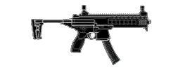
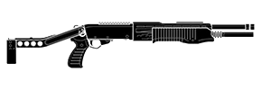
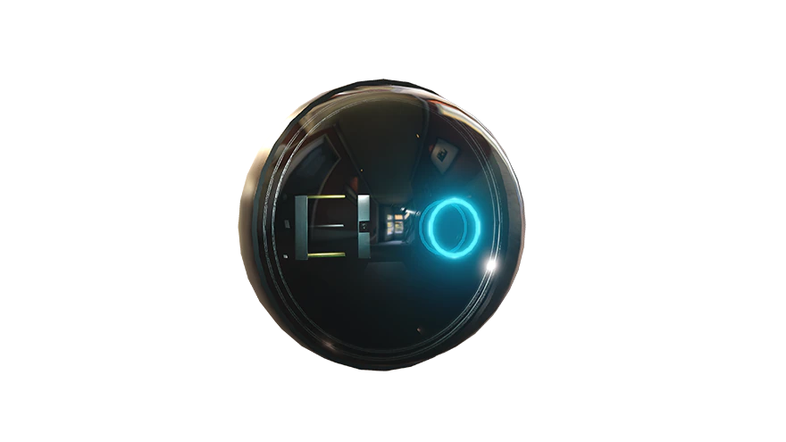

NOME REAL:
Meghan J. Castellano
Meghan J. Castellano
DATA DE NASCIMENTO:
21 de Julho de 1986
LOCAL DE NASCIMENTO:
Oceanside, CA
Oceanside, CA
Castellano nasceu e foi criada na típica comunidade surfista de Oceanside, Califórnia. O pai era um coronel respeitado no Corpo de Fuzileiros, a mãe uma pesquisadora numa companhia de biotecnologia próxima. Desde pequena, era conhecida pelos altos desempenhos em matemática e ciências e como uma atleta prodígio. Tinha esperanças de competir como nadadora nas Olimpíadas, mas quebrou um braço num acidente de carro aos 16 anos, dando um fim à sua carreira. Então, mudou o foco e se alistou na marinha, enquanto ainda ia à faculdade. Depois de se graduar em Ciência da Computação, com especialização em Segurança e Criptografia, ela foi transferida para o Corpo de Domínio de Informações. A atenção de Castellano aos detalhes e sua habilidade analítica fizeram dela uma das especialistas mais disputadas. Ela se candidatou a um posto de SEAL quando abriram uma vaga feminina e continua tendo êxito mesmo depois de vários anos desgastantes, servindo de incentivo a outras mulheres.
LOADOUT
MPX
SPAS
DEAGLE

C4

Grenade
HABILIDADE PRINCIPAL

Dentro de uma bola de silicone fosco, coberta de microventosas, a câmera de
mobilização rápida mantém uma visão nítida graças ao giroscópio interno que decide o
ângulo da lente.
As ventosas possibilitam que a câmera grude em qualquer superfície, enquanto a lente
com giroscópio estabiliza o ângulo e foco.
A transmissão de vídeo ao vivo fica disponível para todos os agentes.